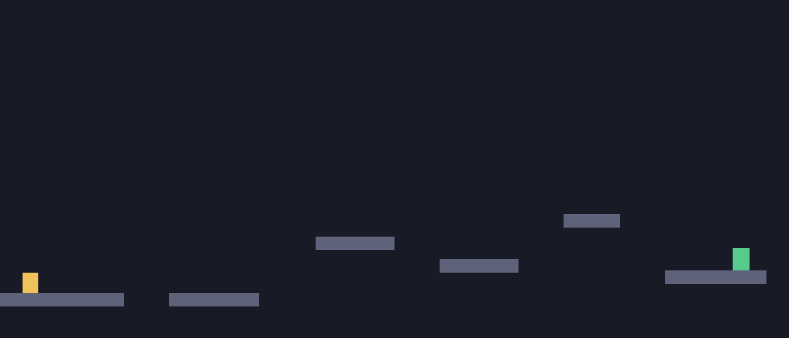

Level 1 · PPO, then a fix
Five playthroughs, pulled straight from the training checkpoints with no edits or speedup. The first four are a PPO agent slowly working out the level from reward alone, and it never gets much past one clear in two. The fifth throws out that whole approach, and that’s the one that works. The completion numbers next to each clip come from hundreds or thousands of separate runs, not just the one you’re watching.

It knows to run right. It has no idea there’s a gap coming, so it just walks off the edge.
It’s started timing jumps right, at least sometimes. This clip happens to be one of the good ones, but at this stage it still fails more often than it clears.
By now it’s clearing gaps on purpose, not by luck, and this checkpoint was tested across a much bigger batch of runs than the first two.
It reaches the goal here, on the second try in a row. That fits: this checkpoint wins about half the time it plays.
PPO’s ceiling wasn’t a training problem. This level needs a jump at one exact moment after landing, and for about fifteen ticks on either side of that moment, the agent’s view of the world barely changes. It has no way to feel time passing. So we gave it one feature it tracks on its own, ticks since it last touched ground, and had it copy a simple rule-based controller that already solves the level every time. No reward signal, no PPO. That was enough.